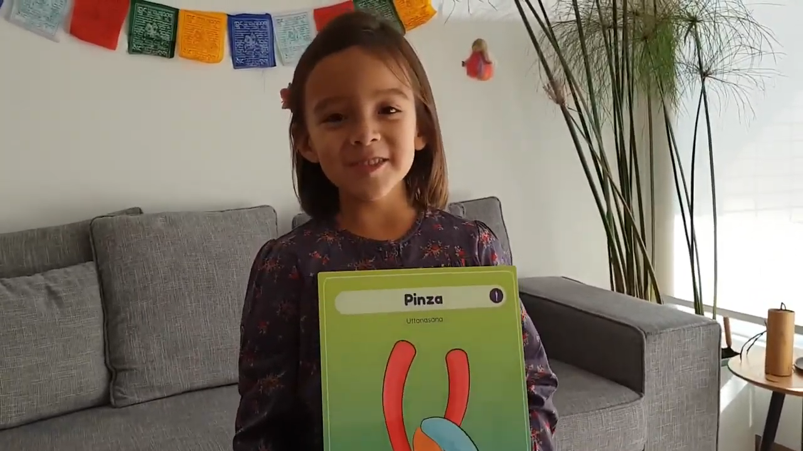

Hola!
Aquí les compartimos una nueva postura de yoga para terminar esta semana 🌱.
La postura de la Pinza o Uttanasana, es una postura de flexión muy intensa, pero muy beneficiosa para nuestro cuerpo.
Algunos de los beneficios de la práctica regular de esta postura son: * Gran estiramiento de todo el cuerpo: piernas, espalda y brazos.
- Ganas flexibilidad.
- Es buena como calentamiento y, de hecho, está incluida en el Saludo al Sol.
- Mantiene la columna vertebral fuerte y a la vez flexible.
- Es relajante y ayuda a calmar la ansiedad.
- Estimula los órganos internos y mejora la digestión.
- Favorece la buena circulación de la sangre.
Espero que disfruten y que nos ayuden a compartirlo.
Un abrazo! 💫
Carmen y Luz